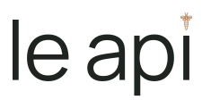
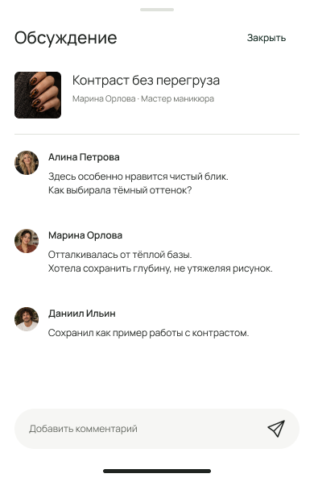

01 / ЧЕЛОВЕК И КОНТЕКСТ
Рекомендация от того, кому доверяют.
В LTK видны автор, интерес и дальнейшее действие. Для Le api это работа коллеги с профессией, объяснением и обсуждением.
Источник: LTK в США
Employee Edit
Дизайн профессиональной среды
Одна цельная система для мастеров и команды салона. Крупная фотография, понятное авторство и полезный следующий шаг: рассмотреть деталь, сохранить пример, обсудить решение.
Изучены публичные материалы fashion-сервисов на рынке США. Коммерческие данные проверены отдельно от визуальных примеров: хороший рейтинг приложения не равен продажам.
01 / ЧЕЛОВЕК И КОНТЕКСТ
В LTK видны автор, интерес и дальнейшее действие. Для Le api это работа коллеги с профессией, объяснением и обсуждением.
Источник: LTK в США02 / РЕДАКЦИЯ И ДЕЙСТВИЕ
REVOLVE связал журнал с действием внутри приложения. В нашей среде следующий шаг — разобраться в приёме, сохранить пример или открыть связанный доступный материал.
Источник: REVOLVE03 / ЕЖЕДНЕВНАЯ ПОЛЬЗА
Whering и Indyx соединяют идеи с организацией и применением. Для мастера это личная коллекция примеров и разговор о своей работе.
Whering · IndyxREVOLVE сообщил о $347,4 млн квартальных продаж во II квартале 2026 года, росте 12%; это выручка бизнеса, а не отдельно приложения. Финансовый отчёт.
LTK указывает 44 млн+ покупателей в месяц и $6 млрд+ годовых потребительских продаж по всему миру. Это данные самой компании, без выделения выручки приложения и рынка США. Данные LTK.
Сопоставимого официального рейтинга текущих продаж только fashion-приложений эти источники не дают. SSENSE использован как визуальный и функциональный ориентир, а не доказательство финансового успеха. Изучены официальные страницы, промоэкраны и отдельные отзывы; полный вход в чужие приложения не выполнялся. Перенос на сотрудников салона — гипотеза для пилота.
Новое: 5 вариантов медной пчелы на белом фоне →
Полное имя и исходная пчела сохранены. В актуальном отборе — чистая подпись и тонкий зелёный край. Тёмное оформление относится к тому же знаку.
Общая навигация, Stories и геометрия действий. Различается содержание: своя работа, разбор серии и вопрос коллегам. В профиле — тот же человек, что в собственной Story.
01 / ПРАКТИКА
Работа крупно, автор и профессия на месте. Подпись объясняет, о чём разбор; её можно раскрыть и вернуться к фотографии.
02 / РАЗБОР
У серии один автор, одно обсуждение и одно сохранение. Основной кадр и детали помогают рассматривать работу осмысленно.
03 / КОМАНДА
Вопрос привязан к конкретной работе. В центре — обмен опытом и профессиональный контекст.
Это демонстрационные макеты: люди, тексты и реакции вымышлены. Настоящие авторы, доступ, медиа и ссылки в приложении должны приходить из действующих данных. Подборка не публикует новые редакционные посты.
Сценарный просмотр одной демопубликации. Можно нажимать на подпись, закладку и комментарии внутри макета или пользоваться кнопками рядом. Он не подключён к аккаунтам и базе приложения.

Сначала сохраните пример, затем раскройте подпись и откройте обсуждение. После закрытия оба состояния сохранятся в этом просмотрщике.
Подпись свёрнута · работа не сохранена
Здесь проверяется логика выбора состояний. В Figma подготовлены прокрутка и переходы; нативные жесты, клавиатура и реальное сохранение данных требуют отдельной проверки Release.
Предыдущие раунды сохранены для истории. В новой подборке остаются решения, которые помогают видеть работу и понимать следующее действие.
Бумажная стопка, круглая печать, внутренняя рамка и плавающая этикетка уступили ясному имени. Они добавляли второй визуальный сюжет и спорили с системным освещением.
Несколько стеклянных панелей над фотографией, широкое зелёное паспарту и каталог без контекста убраны из основного сценария. Крупные кадры и контактный лист сохранены внутри общей системы.
Иконка 01 и единая система ленты. Тип публикации выбирается содержанием: работа, разбор или вопрос. 02 у иконки — аккуратная альтернатива, если нужен более явный зелёный ориентир.
Мастер нашёл полезную идею, понял конкретную деталь, сохранил, задал вопрос и вернулся к месту. Сначала 5–10 друзей, затем команда одного салона. Оценивать пользу и добровольное возвращение; рост удержания пока не доказан.